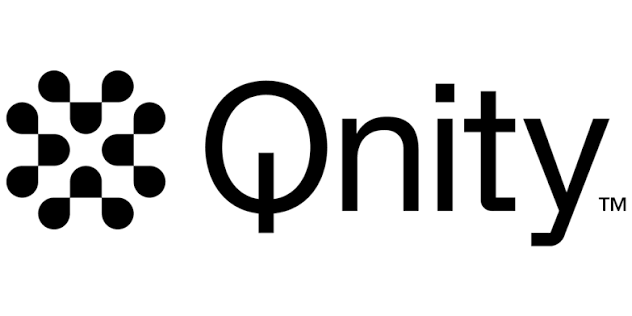

由 Qnity Intern 團隊策劃，以花藝為媒介，為公司設計一場充滿溫度的企業關懷活動。
在快節奏的職場環境中，我們往往忘記停下來，對身邊為我們付出的人說聲謝謝。 這次的企業 Project，我們選擇以「花藝」作為連結人與人之間的橋樑。
透過親手設計花藝作品與感謝卡片，讓每位收到禮物的主管與同仁感受到 這份來自實習生的溫暖與誠意。
從發想到執行，每個環節都由實習團隊共同策劃完成。
記錄活動現場的每個美好瞬間。
這段實習期間，每一位給予我們指導與支持的夥伴，都值得被感謝。